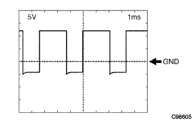

電子制御式オートマチツクトランスアクスル［ECT］システム（U340E） ＥＣＵ端子配列 |
| 端子記号 [端子番号] | 入出力 | 項目 | 測定条件 | 基準値 |
|---|---|---|---|---|
| E02←→ボデーアース [A6] | - | 導通 | 常時 | 導通あり |
| E01←→ボデーアース [A7] | - | 導通 | 常時 | 導通あり |
| SLT+←→SLT- [A17←→A16] | 出力 | 波形 | エンジンアイドル回転時 | 波形1 |
| VC←→E2 [A18←→A28] | 出力 | 電圧 | エンジン停止、IGスイッチ ON | 4.5-5.5V |
| E2←→ボデーアース [A28] | - | 導通 | 常時 | 導通あり |
| OIL←→E2 [A30←A28] | 入力 | 電圧 | トランスアクスル油温10-145°C | 4-0V |
| E1←→ボデーアース [B7] | - | 導通 | 常時 | 導通あり |
| ST←→E1 [B12←→B7] | 出力 | 電圧 | シフトレバーDレンジ(3←→4変速時) | 0-1.5V→9-14V |
| S2←→E1 [B14←→B7] | 出力 | 電圧 | 車両停止状態、シフトレバーNレンジ→Dレンジ | 0-1.5V→9-14V |
| S1←→E1 [B15←→B7] | 出力 | 電圧 | 車両停止状態、シフトレバーNレンジ→Dレンジ | 0-1.5V→9-14V |
| SLU+←→SLU- [B19←→B18] | 出力 | 波形 | エンジンアイドル回転時 | 波形2 |
| NT+←→NT- [B27←→B35] | 入力 | 波形 | 車速約20km/h走行時 | 波形3 |
| L←→E1 [C8←→B7] | 入力 | 電圧 | シフトレバーLレンジ | 7.5-14V |
| L←→E1 [C8←→B7] | 入力 | 電圧 | シフトレバーLレンジ以外 | 0-1.5V |
| 2←→E1 [C9←→B7] | 入力 | 電圧 | シフトレバー2レンジ | 7.5-14V |
| 2←→E1 [C9←→B7] | 入力 | 電圧 | ソフトレバー2レンジ以外 | 0-1.5V |
| D←→E1 [C10←→B7] | 入力 | 電圧 | シフトレバーDレンジ | 7.5-14V |
| D←→E1 [C10←→B7] | 入力 | 電圧 | シフトレバーDレンジ以外 | 0-1.5V |
| R←→E1 [C11←→B7] | 入力 | 電圧 | シフトレバーRレンジ | 7.5-14V |
| R←→E1 [C11←→B7] | 入力 | 電圧 | シフトレバーRレンジ以外 | 0-1.5V |
| STP←→E1 [C19←→B7] | 入力 | 電圧 | ブレーキペダルを踏む(スイッチON) | 7.5-14V |
| STP←→E1 [C19←→B7] | 入力 | 電圧 | ブレーキペダルを離す(スイッチOFF) | 0-1.5V |
| 3←→E1 [C21←→B7] | 入力 | 電圧 | シフトレバー3レンジ | 7.5-14V |
| 3←→E1 [C21←→B7] | 入力 | 電圧 | シフトレバー3レンジ以外 | 0-1.5V |
| +B←→E1 [D1←→B7] | 入力 | 電圧 | エンジン停止、IGスイッチ ON | 9-14V |
| BATT←→E1 [D3←→B7] | 入力 | 電圧 | 常時 | 9-14V |
|  |
波形1(ラインプレッシャコントロールソレノイドASSY[SLT])
| 項目 | 内容 |
|---|---|
| 測定端子 | SLT+←→SLT- |
| 計器セット | 5V/DIV 1ms/DIV |
| 測定条件 | エンジンアイドル回転時 |
 |
波形2(ロックアップコントロールソレノイド[SLU])
| 項目 | 内容 |
|---|---|
| 測定端子 | SLU+←→SLU- |
| 計器セット | 5V/DIV 1ms/DIV |
| 測定条件 | エンジンアイドル回転時 |
 |
波形3(トランスミッションレボリューションセンサ[NT])
| 項目 | 内容 |
|---|---|
| 測定端子 | NT+←→NT- |
| 計器セット | 2V/DIV 1ms/DIV |
| 測定条件 | 車速約20km/h走行時 |